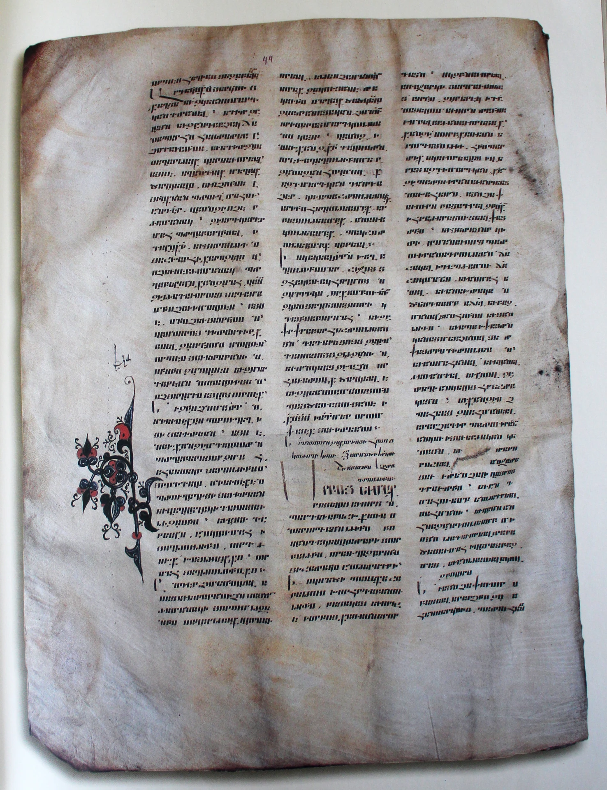

아직 펼치지 않은 카드
아직 펼치지 않은 카드
성경을 위해 만든 글자 · 2마테나다란‘책의 집’이라는 이름의 건물에 옛 손글씨 책과 조각이 2만 3천 점 가까이 모여 있어요. 사람들은 왜 이렇게 오래 책을 베껴 썼을까요?아주 오래된 손글씨 책이 잔뜩 있는 집이야. 몇 권이나 있을까?
1202년 · 1915년 · 오늘무시 아라켈로츠 수도원 → 에치미아진·에르주룸 → 예레반 마테나다란
마테나다란
마테나다란의 진열장에는 가장 큰 아르메니아 손글씨 책 「무시 설교집」이 펼쳐져 있어요. 전해지는 이야기로는, 1915년 두 여인이 이 책을 둘로 나누어 따로 먼 길을 갔대요. 흩어졌던 조각을 하나씩 눌러 다시 한 권으로 모아 보세요.
아주아주 큰 책이 둘로 나뉘어 먼 길을 갔대. 조각을 눌러서 다시 모아 보자!
검수 전 시안이에요(기준서 1판). 만든 기록과 되찾은 기록은 기록대로, 1915년 이야기는 ‘전해지는 이야기’라고 밝혔어요. 기록마다 다른 점은 따로 모았어요. 상상은 ‘눈 감고 상상해 보기’에만 썼어요.
시안 확인용카드 단계 미리 보기
1
2년 동안 만든 큰 책
1200년, 바이부르트의 부유한 상인 아스트바차투르가 큰 설교집을 주문했어요. 필사자 바르단이 예르즌카(지금의 튀르키예 에르진잔)의 아바그 수도원에서 글을 쓰고, 스테파노스가 그림을 그렸어요.
송아지와 어린 암소의 가죽으로 만든 책장에 2년쯤 걸려 1202년에 다 썼어요. 교회의 설교와 증언, 역사 기록을 모은 책이에요.

얼마 뒤 몽골·타타르 군대가 쳐들어와 책 주인은 목숨을 잃었고, 책은 아흘라트의 한 파샤(지방을 다스리던 높은 관리) 손에 넘어갔어요.
무시의 성 아라켈로츠(‘사도들’) 수도원 수도사들이 예사이 주교를 앞세워 마을 사람들의 헌금을 모았어요. 한 해 가까이 애쓴 끝에 은화 4,000닢을 치르고 책을 되찾았어요. 1205년부터 1915년까지 책은 이 수도원의 가장 귀한 보물 가운데 하나였어요.
아주 옛날, 2년이나 걸려서 손으로 쓴 아주 큰 책이야. 빼앗겼다가 마을 사람들이 돈을 모아 되찾았대.
물어보기네가 가진 책 가운데 가장 큰 책은 뭐야?
2
둘로 나눈 책
1915년, 무시 지역의 아르메니아 사람들은 많은 이가 목숨을 잃는 큰 고난 속에 고향을 떠나야 했어요. 전해지는 이야기로는, 피란길의 두 여인이 무너진 아라켈로츠 수도원에서 이 책을 찾아냈어요.
28kg쯤 되는 책은 한 사람이 들기엔 너무 무거웠어요. 두 사람은 책을 둘로 나누어 한쪽씩 맡았어요. 적어도 한쪽은 살아남게 하려는 약속이었어요.
둘로 나뉘었던 책을 하나씩 눌러 제자리로 모아 보세요. 조각마다 어디를 거쳐 왔는지 나와요.

마테나다란 진열장의 「무시 설교집」과 아주 작은 교회 달력(오른쪽) · 사진: Rita Willaert · CC BY 2.0 · 위키미디어 공용
조각을 눌러 보세요. 그 조각이 걸어온 길을 알려 줘요.
흩어졌던 조각이 다시 한 권이 되었어요. 지금은 마테나다란 진열장에 함께 누워 있어요.
위 사진은 지금 마테나다란에 놓인 이 책이에요. 흩어졌던 길을 빗대어 사진을 세 조각으로 나눴어요. 실제로 나뉜 자리와 양은 이와 달라요.
너무 무거운 책을 두 사람이 반씩 나눠 들고 갔대.
물어보기너라면 무겁고 소중한 보물을 어떻게 지켰을까?
3
책의 집에서
지금 이 책은 예레반의 마테나다란(‘책의 집’)에 있어요. 진열장에는 가장 큰 이 책 곁에, 1435년에 만든 아주 작은 교회 달력이 함께 놓여 있어요.
2012년에는 예레반의 테리안 거리와 모스코뱐 거리가 만나는 곳 가까운 녹지에, 이 책과 두 여인을 새긴 기념비가 세워졌어요.
가장 큰 책 옆에 아주 작은 책이 나란히 있어.
물어보기아주 작은 책에는 무엇이 적혀 있을까?
4
이름 없는 두 사람
두 여인의 이름은 남지 않았어요. 에치미아진에서 반쪽을 받은 사제도 그 여인의 이름을 묻는 것을 잊었다고 전해요.
“이 여인들이 글을 읽을 줄 알았는지조차 알려져 있지 않아요.”
조지프 다그디기안, 「무시 설교집을 구한 여인들을 기억하며」(2013, 이 안내서가 옮김)
읽지 못했을지도 모를 책을, 두 사람은 끝까지 지키려 했어요. 그 덕분에 800여 년 전 바르단이 쓰고 스테파노스가 그린 책장을 지금도 볼 수 있어요.
이름도 모르는 두 사람이 소중한 책을 지켜 줬어.
물어보기이름은 몰라도 고마운 사람이 있어?
눈 감고 상상해 보기
흙길 위로 해가 기울어요. 두 사람이 무거운 보따리를 고쳐 메자, 안에서 오래된 양피지가 바스락거려요. 갈림길에서 두 사람은 서로에게 무슨 말을 했을까요?
눈을 감아 봐. 커다란 책을 반씩 나눠 안고 두 사람이 걸어가. 책장이 바스락바스락.
나의 자리
누군가 오래 베껴 써서 나에게까지 전해진 글이 있다면, 그것은 무엇인가요?
좋아하는 책의 한 문장을 손으로 베껴 써 볼까?
마음에 닿는 한 줄을 고르거나 직접 써 보세요. 한 줄을 남기면 이 자리의 도장이 찍혀요. 이 기기에만 저장돼요.
더 깊이
궁금한 칸만 펼쳐 읽어도 괜찮아요.
알고 보면
무시 설교집(므쇼 차른티르) ‘무시의 설교 모음’이라는 뜻이에요. 책장은 가로 55cm, 세로 70cm쯤이에요. 처음에는 660장쯤이었다고 보고, 지금은 601장이 남아 있다고 해요(아르주마니안 신부의 글).
아라켈로츠 수도원 ‘사도들의 수도원’이라는 뜻이에요. 역사 속 타론 지방, 무시 가까이(지금의 튀르키예 동부)에 있었어요.
되찾은 책 무시 사람들이 은화를 모아 되찾은 뒤, 책은 1205년부터 1915년까지 아라켈로츠 수도원에서 지켜졌어요.
기록마다 다른 점
전해지는 이야기 1915년 두 여인의 이야기를 실은 EVN 리포트도 “이야기의 자세한 내용이 정확하든 아니든”이라고 적었어요. 이 카드는 EVN 리포트와 다그디기안의 글을 따랐어요.
두 반쪽이 걸은 길 아르주마니안 신부는 한쪽이 티플리스의 아르메니아 민속학회로 갔고, 다른 쪽은 1919년 바쿠에서 팔리려 나왔다고 적었어요. 다른 글(세르기엔코)은 묻힌 반쪽을 찾은 러시아 장교를 ‘니콜라이 데 고베르티’라고 하고, 두 여인이 자매였다는 이야기와 처음 만난 사이였다는 이야기를 함께 전해요.
다시 하나가 된 곳 EVN 리포트는 마테나다란이 세워질 때 두 쪽이 다시 만났다고 하고, 세르기엔코의 글은 나뉜 지 14년 만에 에치미아진에서 하나가 되었다고 해요.
언제 빼앗겼나 아르메니아 공영방송은 1203년 몽골·타타르 침입 때라고 하고, 아르주마니안 신부는 1204년 바이부르트의 한 판관이 훔쳤다고 적었어요.
무게 27.5kg(EVN 리포트), 28kg(아르메니아 공영방송), 61파운드(약 27.7kg, 다그디기안)처럼 조금씩 달라요.
직접 가 보기
확인한 날 · 2026년 11월 18일 · 바뀌기 쉬운 정보라 정기적으로 다시 확인해요
이 책은 예레반 마슈토츠 대로 53에 있는 마테나다란의 전시실에 있어요. 누리집에 따르면 박물관은 화요일부터 토요일까지 10시~17시 50분에 열고, 일요일·월요일·공휴일에는 쉬어요. 가기 전에 누리집에서 다시 확인하세요.
두 여인의 기념비는 테리안 거리와 모스코뱐 거리가 만나는 곳 가까운 녹지에 있어요.
다시 모은 책 금박
흩어졌던 세 조각을 모두 모으면 카드에 금박이 입혀져요.
흩어졌던 세 조각을 한 권으로 모으기
아이와 함께 채색
아이와 함께 ‘영화처럼 보기’를 끝까지 보면 카드가 채색돼요.
아이와 함께 ‘영화처럼 보기’를 끝까지 보기
근거 보기 (8)
- EVN Report: Homilies of Mush — 1200년 바이부르트 상인 아스트바차투르의 주문, 아바그 수도원(예르즌카)의 필사자 바르단, 화가 스테파노스, 2년, 송아지·어린 암소 가죽, 처음 660쪽으로 봄, 설교·증언·역사 기록, 은화 4,000닢, 예레반 원형 공원의 두 여인 석상, “이야기의 자세한 내용이 정확하든 아니든”
- EVN Report: Where are our manuscripts? — “The story goes”, 무너진 아라켈로츠 수도원, 27.5kg, 둘로 나눔, 에치미아진의 사제(이름을 묻지 못함), 에르주룸에 묻음, 러시아 군인, 티플리스 아르메니아 민속학회(랄라얀), 마테나다란이 세워질 때 다시 만남
- 아르메니아 공영방송(1lurer.am, 2015): Homilies of Mush — 1200~1202, 1203년 침입과 주인 아스트바차투르, 아흘라트의 파샤, 예사이 주교와 무시 사람들의 헌금, 한 해 가까운 협상, 은화 4,000, 1205년 아라켈로츠, 28kg
- Joseph Dagdigian(2013), Horizon Weekly: Heroines of Homilies of Mush rescue remembered — 22×27인치·61파운드, 에치미아진과 에르주룸, 러시아 군인, 마테나다란에서 다시 만남, 2012년 테리안·모스코뱐 거리 기념비, 글을 읽을 줄 알았는지조차 모름, 진열장의 가장 작은 사본
- Father Zaven Arzoumanian(2019), Massis Post: The largest Armenian manuscript — 70×55cm, 처음 660장·지금 601장, 1204년 바이부르트 판관, 티플리스·1919년 바쿠, 1977년 레닌 도서관의 두 장
- V. Sergienko: Msho Charntir — 러시아 장교 니콜라이 데 고베르티, 티플리스, 14년 뒤 에치미아진, 두 여인이 자매였다는 이야기와 모르는 사이였다는 이야기
- 마테나다란 누리집 — 관람 시간(화~토 10:00~17:50), 주소 마슈토츠 대로 53
- 위키미디어 공용: Matenadaran - biggest and smallest(가장 큰 설교집과 가장 작은 교회 달력), 무시 설교집 44쪽, 마테나다란 사진, 아라켈로츠 수도원 설명
그림·사진·소리 출처
‘처음 만나는 기독교 문화’의 깊은 카드예요. 카드 단계와 남긴 글은 이 기기에만 저장돼요.